Domination
A team holds the prop's input for a few seconds to claim it, and scores every tick while it keeps it. The other team can take it over at any time.
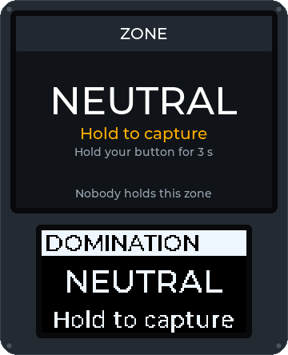
Modes react to intent ("a team is claiming this prop"), not to hardware, so the same script runs on a Field Box, a keypad box or an Android phone. Fourteen modes, one modifier and the Medic Kit are written and tested in software today; none has run on a real field yet.
Every animation below is drawn by the Field Box's own firmware code, not mocked up: the big screen above, the small OLED below, as a game of the mode goes on. The button under a picture pauses it.
A team holds the prop's input for a few seconds to claim it, and scores every tick while it keeps it. The other team can take it over at any time.

Attackers arm the bomb, then defend it; defenders must defuse it before the fuse runs out. An explosion ends the game, the attackers winning. Arm and defuse by holding a button, or give each team its own keypad code.
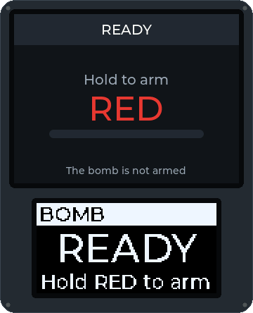
Bomb in rounds, until the game time runs out. Attackers arm the bomb, defenders defuse it. An explosion is a point for the attackers, a defuse a point for the defenders; then the box rests and the next round starts. The team with more points wins.
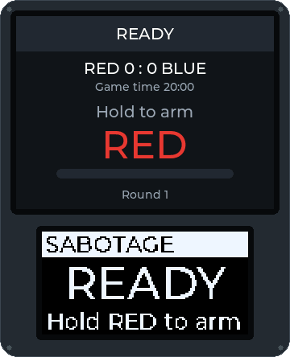
Teams capture boxes as in Domination, but a team scores only while it holds every box at once. Lose one and the scoring stops.
The defenders start with every zone. Once they are down to their last one, a countdown to defeat runs until they retake another; when it runs out, the attackers win.
Players carry signed NFC tags. A team scans the tags it collected at a station: an enemy's tag confirms the kill, a teammate's denies it. Forged tags are refused.
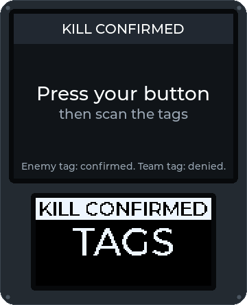
A respawn point counts lives per team or per player, with a cooldown between respawns. When a team runs out of lives, it is eliminated.
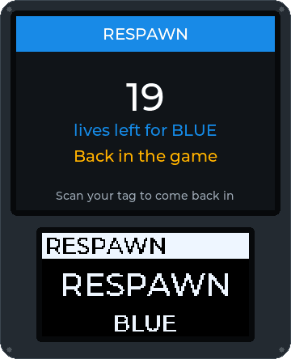
Players check in at a checkpoint with their tag. The box counts each team's players and can give points for every check-in.
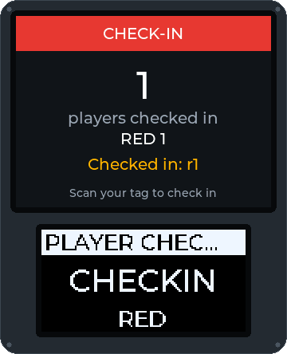
Next to any mode: a hit player scans their tag and holds a button for a set time to be healed. The kit shows how many heals it has left; each player gets a limited number per game at every kit, the GM refills a kit from the console, and every heal shows in the GM's log and the players' view.
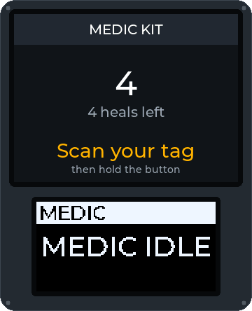
Teams capture a master box and its satellites. Only the master scores, and every satellite its holder also holds raises its points; when the master changes hands, every satellite goes back to neutral. Written and tested in software, not yet played on real boxes.
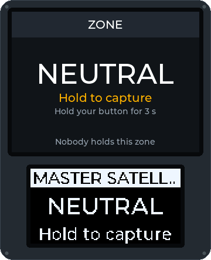
A target lights up in a random team's colour for a few seconds, and a hit while it is lit scores for that team. The game is written and tested in software; the target addon it needs (a plate with a hit sensor and a light ring) is not built yet.
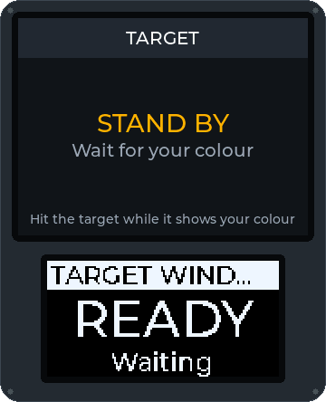
A terminal sets a puzzle on its keypad: crack a code from how many digits are in the right place, cut the wires in the right order, or repeat a sequence. A wrong answer locks it for a while. Solving it can reveal a code for another objective, score, and capture the terminal until another team hacks it back. Written and tested in software, not yet played on a phone in the field.
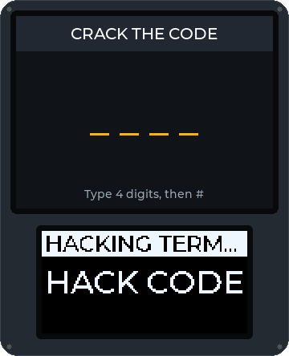
One team escorts its VIP, a player who shares their position from the app, or a payload, a phone with GPS, to an extraction zone; the others try to stop them. Checkpoint boxes along the way score while a team holds them. Positions stay on the field controller and the phone; only "extracted" goes out. Written and tested in software, not yet played with real GPS.
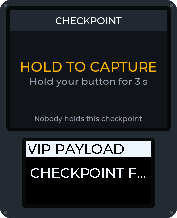
Teams capture factory boxes, which make money while they hold them. Players collect it by scanning their tag at their team's factory, carry it across the field and bank it at a bank box for points; the field controller keeps what each player carries, so the money can be collected at one box and banked at another. A player healed at a medic kit loses what they carry, and the first team to bank the target can win. Written and tested in software, not yet played on real boxes.
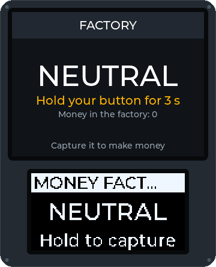
Several boxes, but only one can be captured at a time, and both teams are told which. The team that holds the active box scores for every full minute; once a team has held it long enough, the box is completed for that team and locked, and the next box in the order is announced to both teams. The order is the GM's list, the box numbers or random; the game ends when the last box is completed, or when a team reaches a target score. Written and tested in software, not yet played on real boxes.
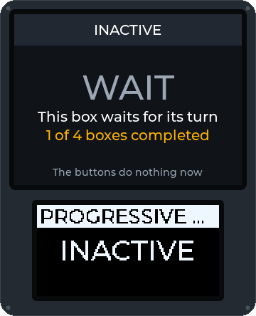
Runs alongside any mode on the same box: keypad codes grant points, hints or unlocks, and the GM sees who used each code and which team held the box.
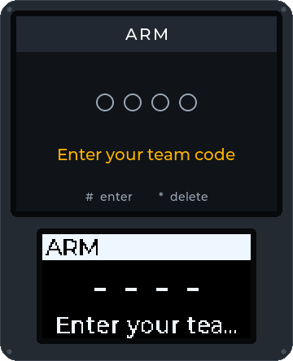
Capture the flag, your club's own… Modes are short scripts. Propose one with the game mode idea template, or share a finished one as a signed package in the mode registry.
Eight captures from the real Field Box firmware (ESP32, LVGL 9.2, 320 × 240 TFT) running in the Wokwi emulator, from the game master's PIN to the bomb being defused. The box UI is in English. The firmware now runs on a real Heltec V4.3; these screenshots are from the emulator. Tap or click a screenshot to see it larger.


The build manual has the full wiring diagram and first-flash guide for the Heltec WiFi LoRa 32 V4.